Here's some projects I did.

Cubicle
This is my research project at UIUC. I gamified some paper-based spatial visualization skills training exercises into a gaming platform. The game called Cubicle contains eight modules. The premise of the game is that the player is trapped in a dungeon maze. To escape, the player needs to navigate through the maze and unlock all the rooms. Each room contains a totem, the entry to a game module. In each game module, a chain of locked rooms contains different levels in that game module. Finishing the game task in the room is the only way to unlock the door to the next room.
VR Maze
This is a course project of Human-Computer Interaction. This game called VR Maze aims to train people's abilities of navigation. The player is put in a randomly generated maze at the beginning of the game. Given a randomly generated destination and the limited time to memorize the route on the minimap, the player will navigate in the maze using HTC VIVE handler. The amount of time that the player takes measures the player's navigation ability. The player wins the game once he/she reaches the destination. This project ranked the 1st out of 43 students in the Human-Computer Interaction course.
 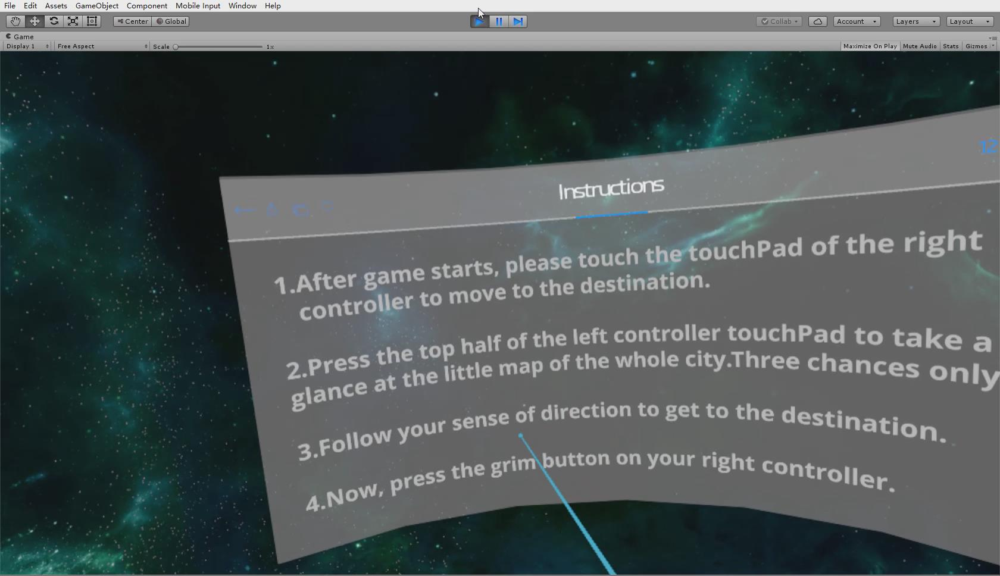
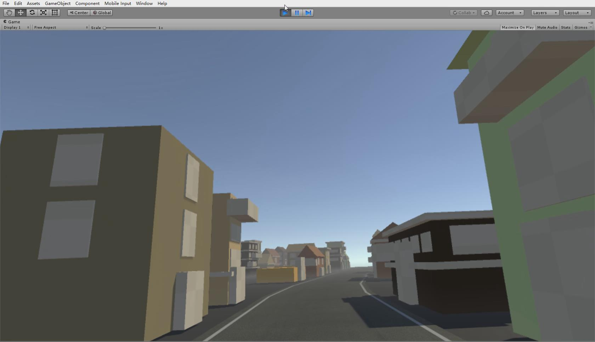
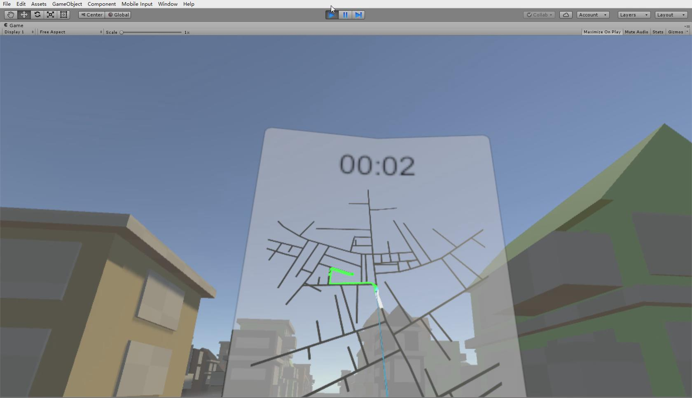
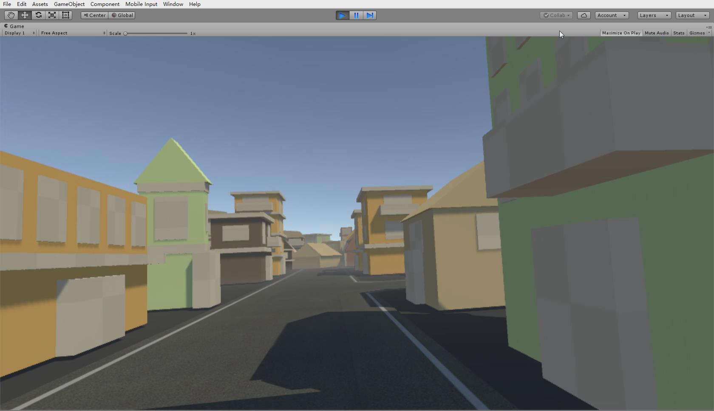
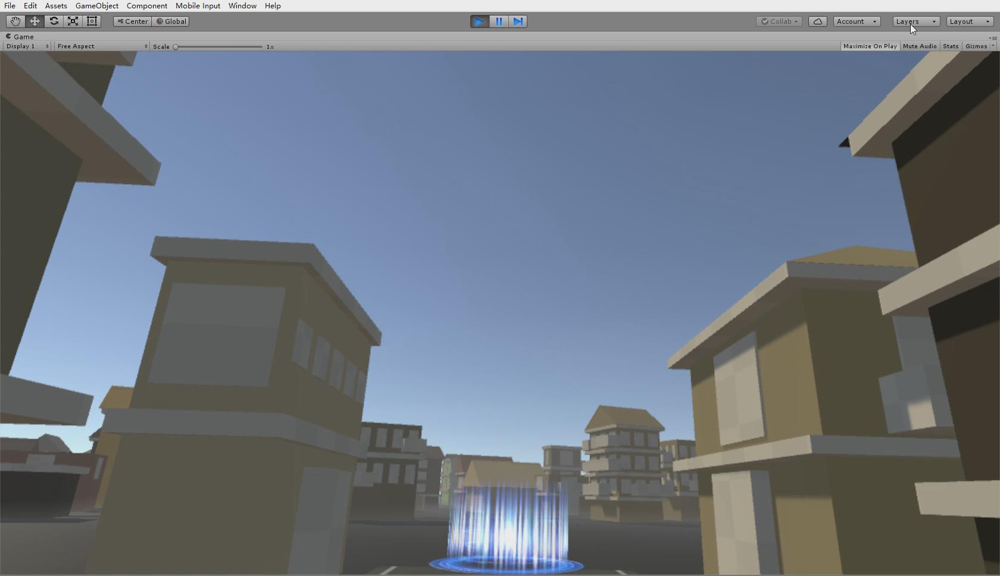
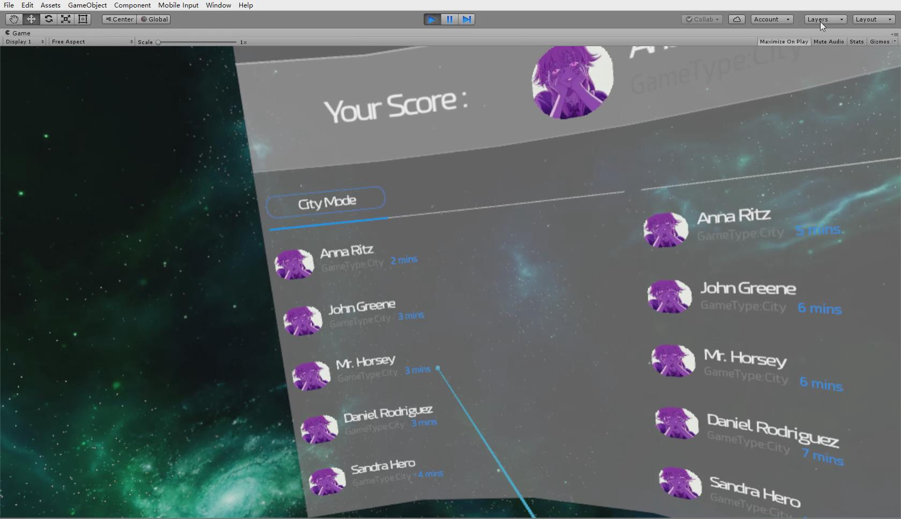
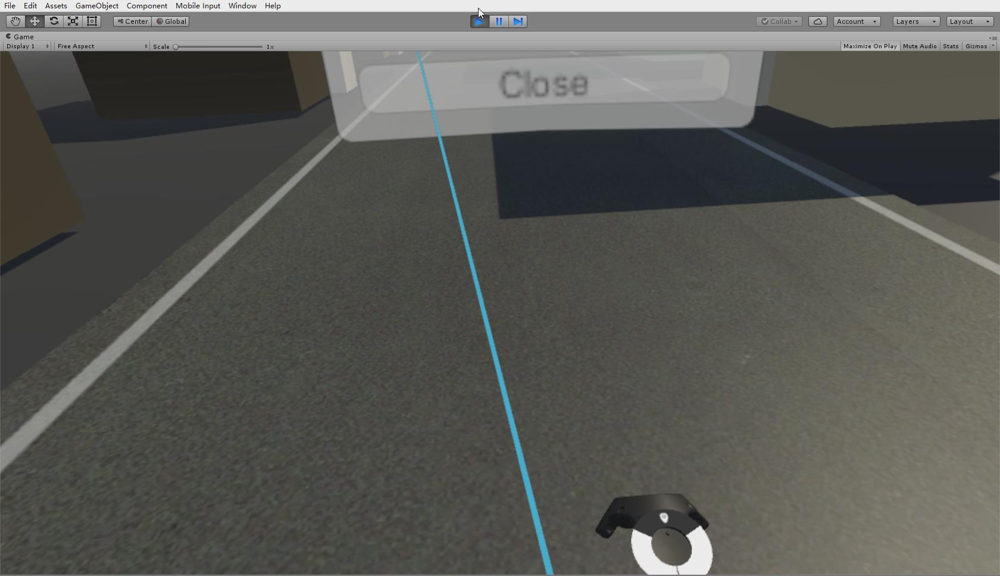
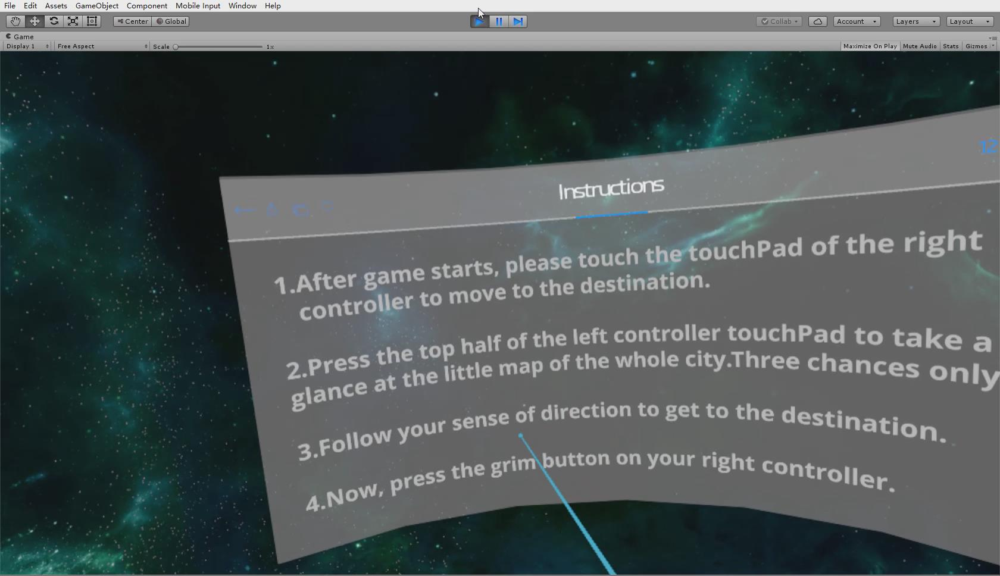
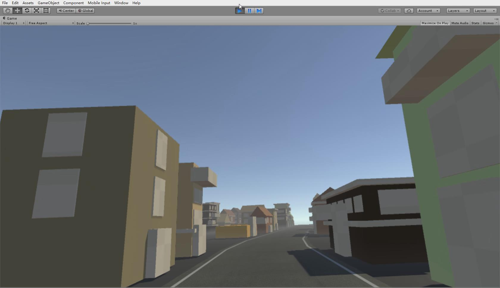
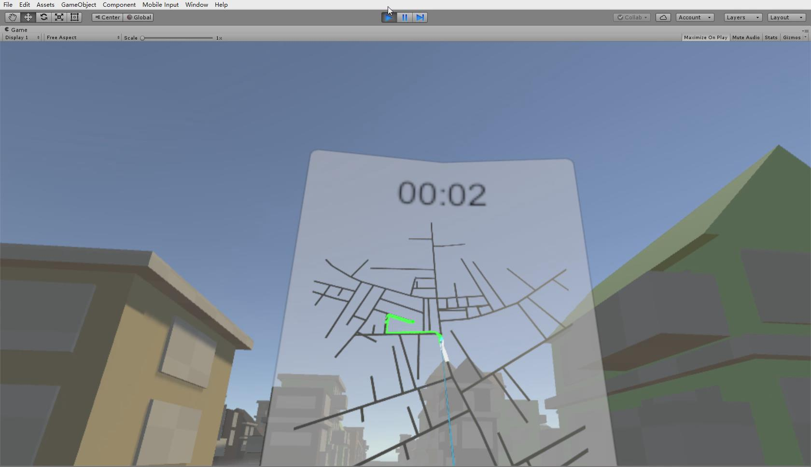
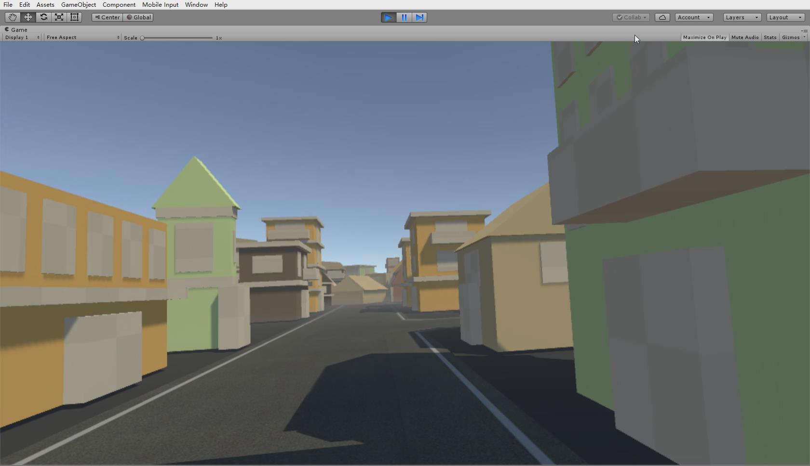
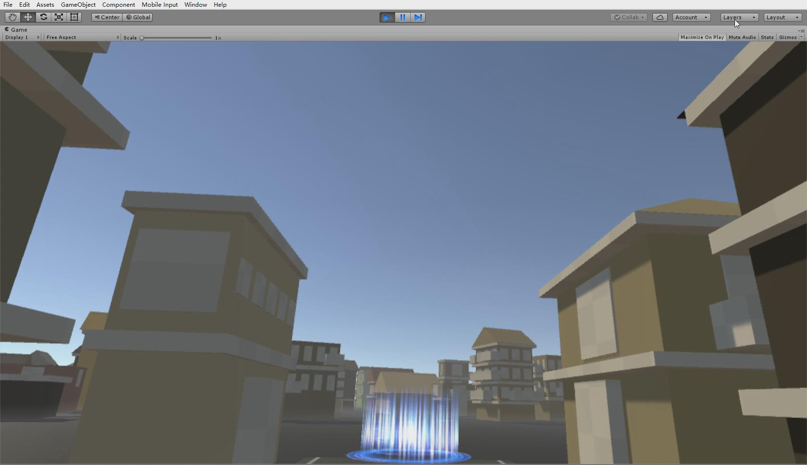
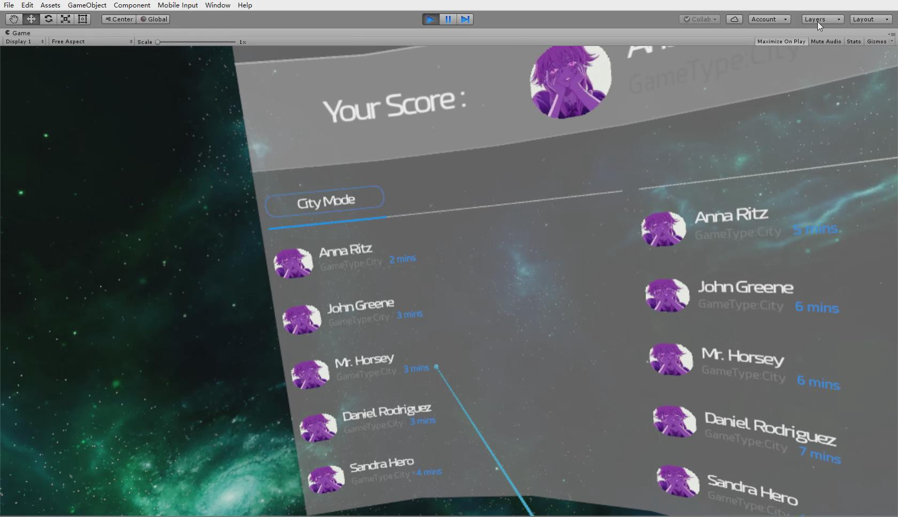
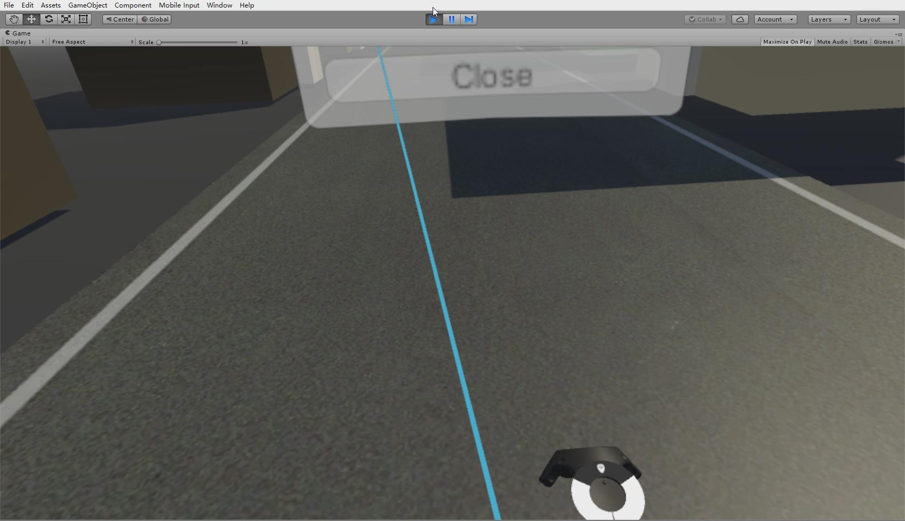
Music Shooter
This is a personal project named VR music shooting game. In this project I tried to combine as many gaming elements as I could to build a musical game in VR that never existed before. The game is called Music Shooter. In this game, the player shoots the targets according to the rhythm of the music. The player will be scored by the accuracy of his/her hitting the rhythm. At the same time, players can use props to increase HP or score, enhancing the uncertainty of the game.